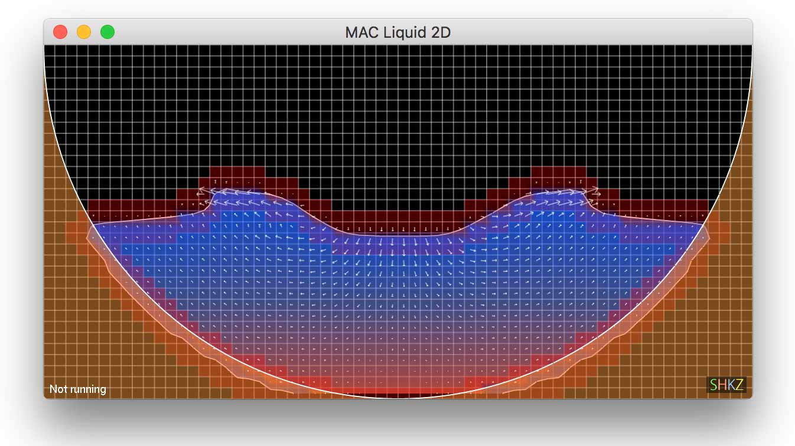

|
Shiokaze Framework
A research-oriented fluid solver for computer graphics
|


|
|
Shiokaze Framework
A research-oriented fluid solver for computer graphics
|
|
This is the easiest and most reliable option if you want to make sure that Shiokaze compiles out without error. First, visit Docker and get a copy of Docker installed. Next, run:
This will automatically download a Docker image of Shiokaze build environment, create a container, and log in. Note that –rm option tells Docker that a created container will be destroyed when logged out, which means that all the files in the container will be lost. If you intend to incrementally work on the container, please remove –rm option or append -v ${PWD}:/var/www/html option, which maps currently directory on the host to the working directory in the container. Next, run
to get the source of code of Shiokaze at the working directory. Next, run
to compile Shiokaze. Finally, run
After a moment, visit http://localhost:8080/shiokaze/log_waterdrop/mesh_img/ to see the results like below. You may alternatively build our Docker image by yourself through Dockerfile located at shiokaze/scripts/Dockerfile. We note that currently Shiokaze compiled with our Docker image does not support interactive UI display. If this is desired, proceed to below to compile on your platform.

Source code of Shiokaze can be obtained by:
On macOS, we need to install required libraries. To do so, we first install Xcode command line tools and Homebrew. They can be installed by:
and
First, make sure that the version of GCC compiler is version 6 or higher. On Debian, we need to install required libraries as well. They can be installed by:
Shiokaze adopts Waf build system. First, set up build environment by running:
Next, compile and generate dynamic libraries by running:
Finally, run:
If you see a simulation like below, hit esc key to leave the simulation. Now, your Shiokaze is ready to go.

 1.8.17
1.8.17